The Hitchhiker's Guide to Bitcoin
Bitcoin was the first cryptocurrency. In this guide, we will look into how bitcoin works and how you can store and use it.
Bitcoin operates on a decentralized peer-to-peer network. Transactions are verified and processed by network participants.
When one initiates a transaction, the transaction is broadcasted to the bitcoin network. Miners then create a block by adding the transaction to a group of other transactions broadcasted to the network at around the same time. The block is then mined and broadcasted to the network. The other nodes verify that it is valid and conforms to the rules of the Bitcoin protocol.
To be verified, the block has to adequately reference the previous block in the chain. If a majority of the nodes agree that the block is valid, it is added to the blockchain and becomes part of the permanent record of all Bitcoin transactions.
The bitcoin network uses public-key cryptography to secure bitcoin transactions. Each user has two keys a public key also known as the address, which is used to receive bitcoin. The second key is a private key, it is used to sign and authorize transactions.
To start using bitcoin, you need a bitcoin address to receive bitcoin and the associated private key to be able to spend the bitcoin you receive. A bitcoin wallet gives you access to the public key and the private key pair you need to make bitcoin transfers.
We will now look into how you can install and use Electrum wallet to store bitcoin for your everyday uses.
Go to the official electrum website and download and install the latest version of the wallet for your operating system.
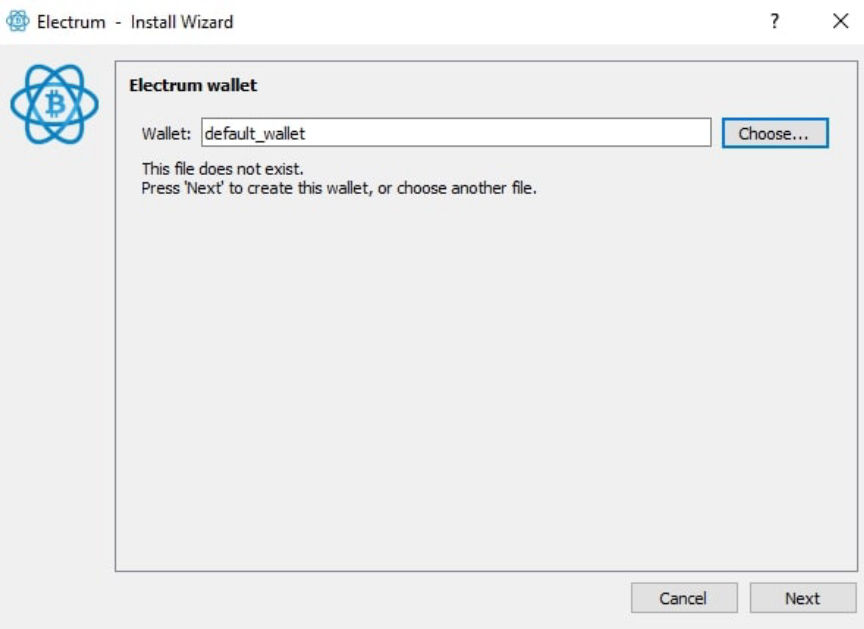
Once the app opens, click on choose to select where you want to store your wallet. After selecting the location click on next.
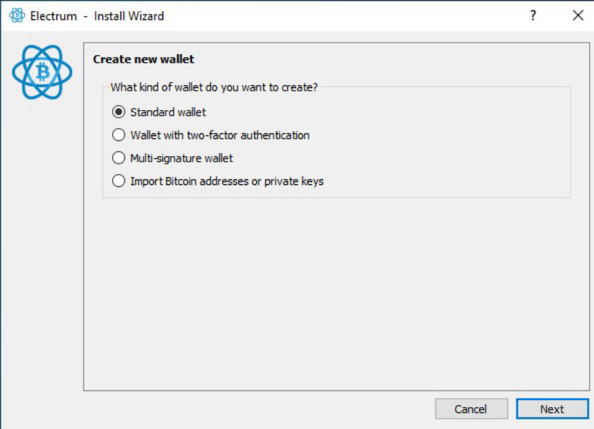
You will be asked to choose a wallet type. Select the standard wallet and click on next. You can also choose a multi-signature wallet if you require more security.
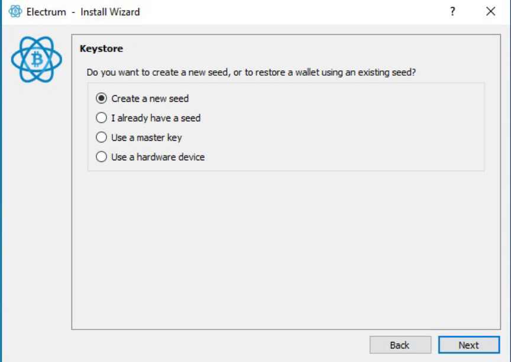
Select create a new seed and click on next. Electrum will generate a seed phrase. You will use it to restore your wallet if you forget your password or lose access to your device.
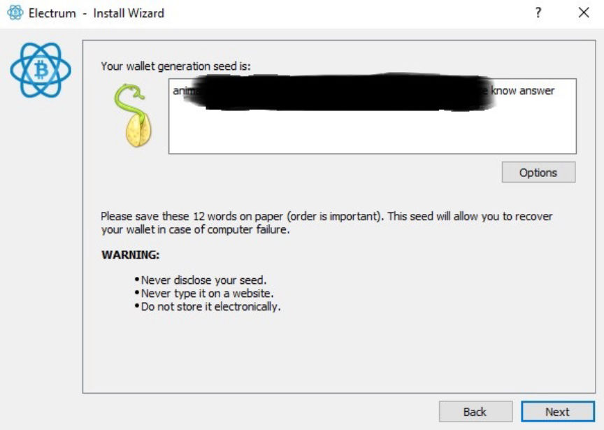
Write down the seed phrase and store it in a safe and secure location. Click on next after you write down the seed phrase in the displayed order.
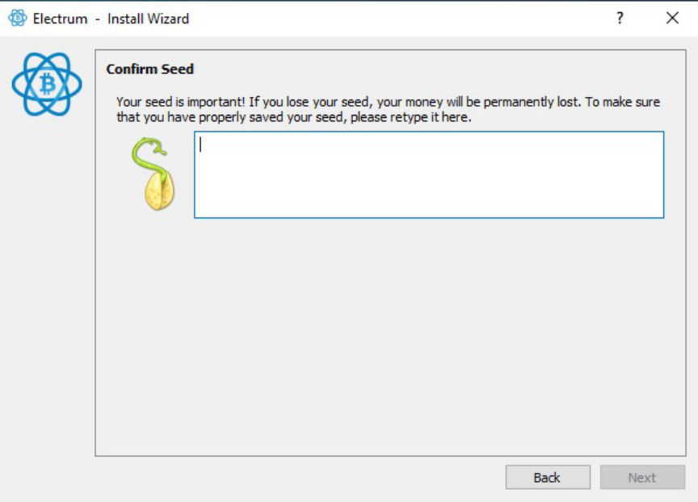
Confirm your seed phrase and click on next.
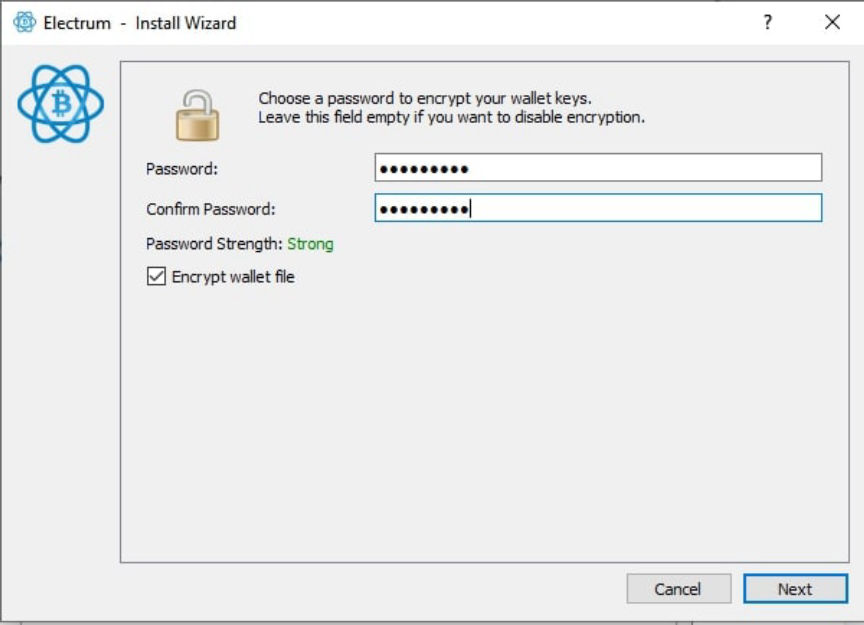
You will be provided with the option to encrypt your wallet with a password. Create a strong password and confirm it. You will need the password whenever you send bitcoin from your wallet. Make sure you store it securely. Click on next after you confirm your password.
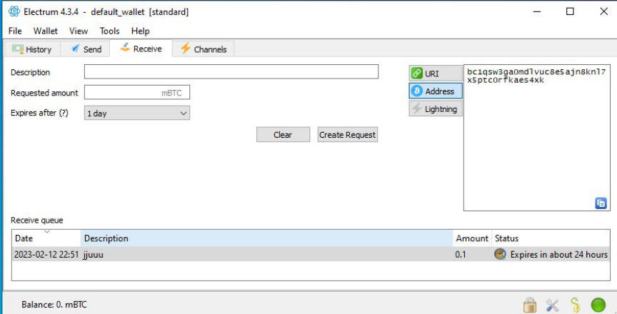
You can receive bitcoin in your new wallet by clicking on receive tab. Generate a bitcoin address and send bitcoin to it.
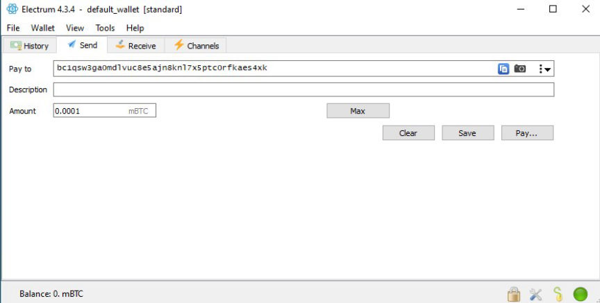
To send bitcoin, click on the send tab, and enter the recipient's address and the amount of bitcoin you want to send.
We looked into the most basic setup of the electrum wallet. You can increase your privacy when using the wallet by using electrum through Tor.
To increase the security of your funds regularly back up your wallet to ensure you can recover it in the event of a problem and always keep your software up to date.
The bitcoin blockchain keeps a permanent record of all transactions associated with a bitcoin address. It makes it possible for anyone to know the balance of any bitcoin address. The identity of the holder of a given address remains unknown until the owner does something that could lead to the revelation of their identity. Identities are mostly revealed during the purchase or cash out of bitcoin via exchanges.
For true anonymity, you should consider using privacy-focused coins such as Monero.
Bitcoin
Bitcoin operates on a decentralized peer-to-peer network. Transactions are verified and processed by network participants.
When one initiates a transaction, the transaction is broadcasted to the bitcoin network. Miners then create a block by adding the transaction to a group of other transactions broadcasted to the network at around the same time. The block is then mined and broadcasted to the network. The other nodes verify that it is valid and conforms to the rules of the Bitcoin protocol.
To be verified, the block has to adequately reference the previous block in the chain. If a majority of the nodes agree that the block is valid, it is added to the blockchain and becomes part of the permanent record of all Bitcoin transactions.
The bitcoin network uses public-key cryptography to secure bitcoin transactions. Each user has two keys a public key also known as the address, which is used to receive bitcoin. The second key is a private key, it is used to sign and authorize transactions.
To start using bitcoin, you need a bitcoin address to receive bitcoin and the associated private key to be able to spend the bitcoin you receive. A bitcoin wallet gives you access to the public key and the private key pair you need to make bitcoin transfers.
We will now look into how you can install and use Electrum wallet to store bitcoin for your everyday uses.
Download and Install Electrum Wallet
Go to the official electrum website and download and install the latest version of the wallet for your operating system.
Create a New Wallet
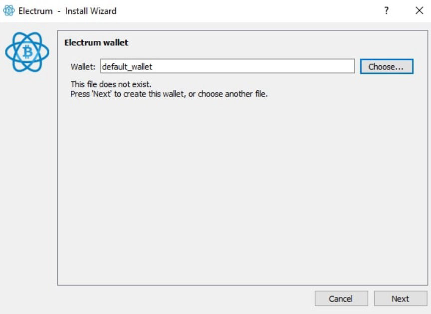
Choose wallet storage location
Once the app opens, click on choose to select where you want to store your wallet. After selecting the location click on next.
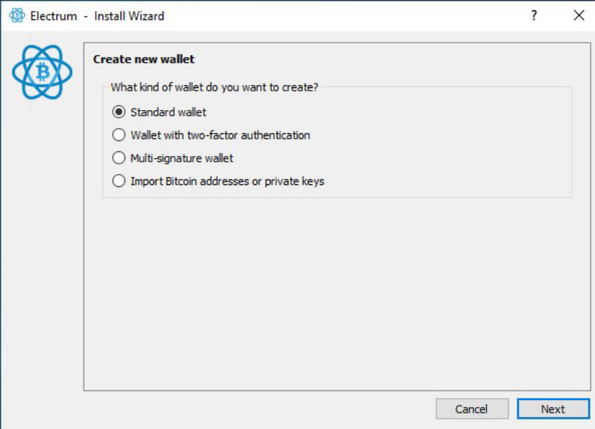
Select wallet type
You will be asked to choose a wallet type. Select the standard wallet and click on next. You can also choose a multi-signature wallet if you require more security.
Secure your Seed Phrase
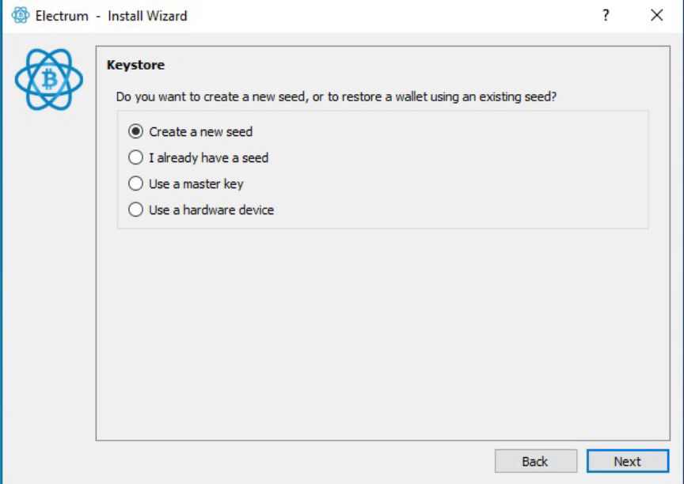
create a new seed
Select create a new seed and click on next. Electrum will generate a seed phrase. You will use it to restore your wallet if you forget your password or lose access to your device.
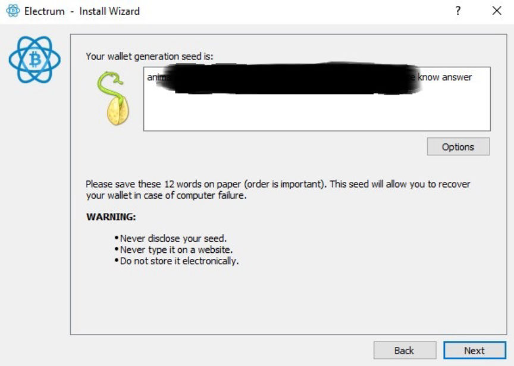
Write down the seed phrase exactly as it is displayed
Write down the seed phrase and store it in a safe and secure location. Click on next after you write down the seed phrase in the displayed order.
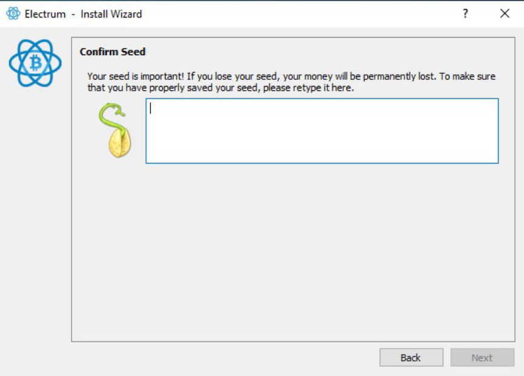
Type your seed phrase to confirm
Confirm your seed phrase and click on next.
Encrypt your Wallet
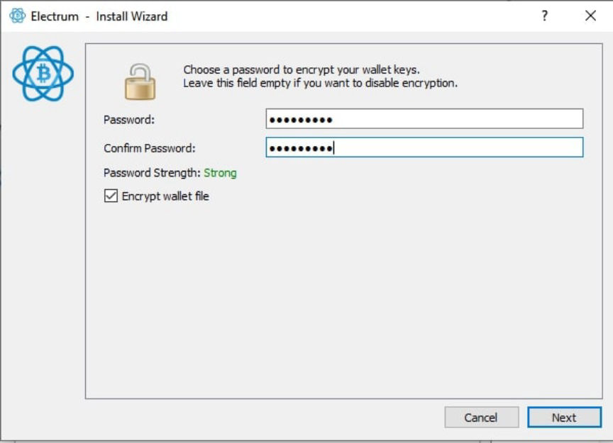
Create a strong password for your wallet
You will be provided with the option to encrypt your wallet with a password. Create a strong password and confirm it. You will need the password whenever you send bitcoin from your wallet. Make sure you store it securely. Click on next after you confirm your password.
Receive Bitcoin
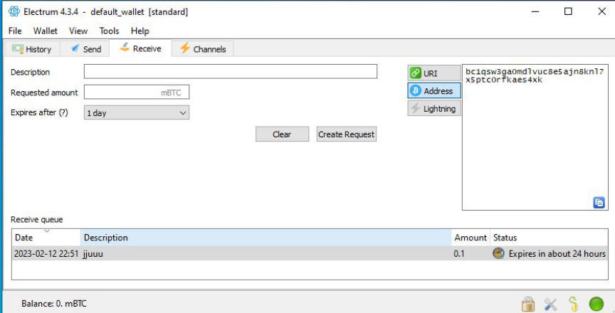
Receive bitcon
You can receive bitcoin in your new wallet by clicking on receive tab. Generate a bitcoin address and send bitcoin to it.
Send Bitcoin
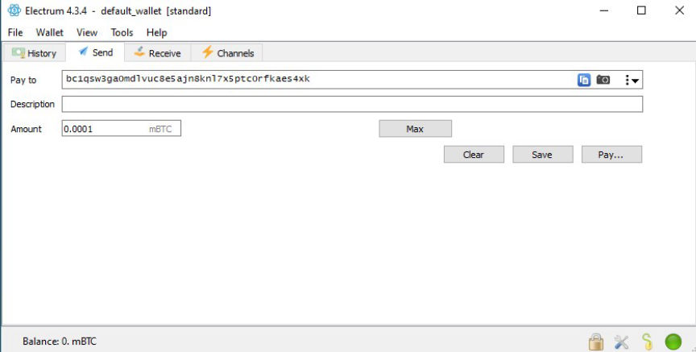
Send bitcoin
To send bitcoin, click on the send tab, and enter the recipient's address and the amount of bitcoin you want to send.
We looked into the most basic setup of the electrum wallet. You can increase your privacy when using the wallet by using electrum through Tor.
To increase the security of your funds regularly back up your wallet to ensure you can recover it in the event of a problem and always keep your software up to date.
The bitcoin blockchain keeps a permanent record of all transactions associated with a bitcoin address. It makes it possible for anyone to know the balance of any bitcoin address. The identity of the holder of a given address remains unknown until the owner does something that could lead to the revelation of their identity. Identities are mostly revealed during the purchase or cash out of bitcoin via exchanges.
For true anonymity, you should consider using privacy-focused coins such as Monero.